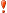

| Record number | 534208 |
|---|---|
| Title | Creating impacts with open data for agriculture and nutrition in Kenya |
| Author(s) | Verweij, P.J.F.M.; Roosenschoon, O.R.; Parr, M.; Kamau, K.; Macharia, M.; Msengezi, C. |
| Source | Wageningen : Wageningen UR - 35 p. |
| Department(s) |
Alterra - Earth informatics Alterra - Spatial knowledge systems |
| Publication type | Research report |
| Publication year | 2017 |
| Comments |
Staff Publications
Research output of Wageningen University & Research staff
- external user (warning)
-
Log in as

- About